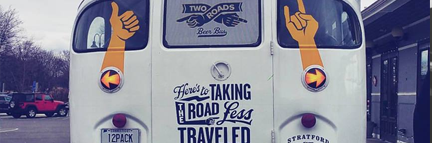
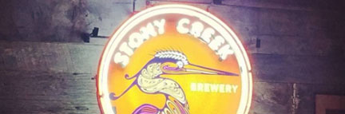

Next stop: a road less traveled!
If you ever plan to go to the Two Roads brewery in Stratford CT on a Saturday or Sunday, there is an easy way to get to the road less traveled. On the westbound side of the train station, you can hop on the 12 Pack Bus, which will take you right to the brewery. Text 203-449-1425 a hour in advance and the bus will pick you and your friends up.
Two Roads Winter Classic
At the end of the event we will be selling limited 22oz bottles of our Route of All Evil with Ghost Peppers - This extra spicy version of our Route of All Evil is a fiery twist on our malt and hop intensive Black Ale. Two of our evil brewers, Roger and Colin, added chipotle and ghost peppers (one of the world’s hottest known chilis) to this brew and also aged this piney, roasty concoction in rye whiskey barrels. Look out because the Road Less Shoveled is about to heat up!
Spend a day at the creek
This newly renovated tap room and it’s giant fireplace offer a cabin in the woods atmosphere. Stony Creek brewery in Branford, CT has a great selection of beers, for the professional beer enthusiast to the ones with beginners taste. This place has a homey atmosphere, great for meeting up with co-workers after a long day at the office or even a fun date night with friends or loved ones.